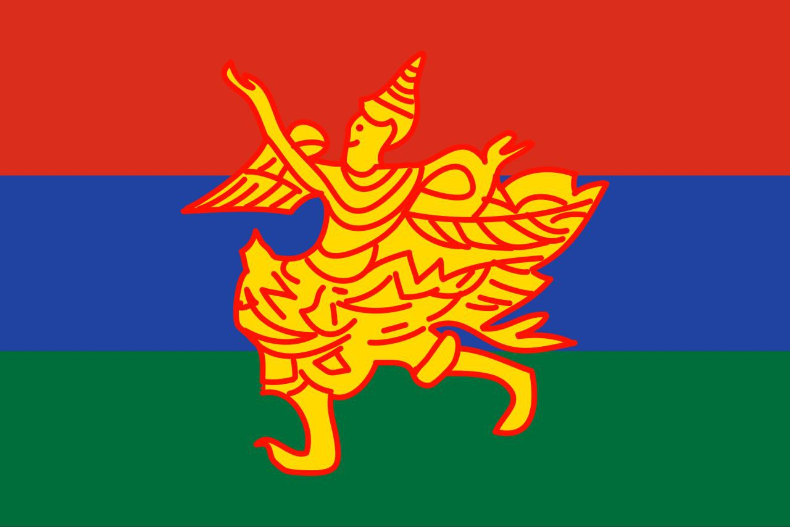
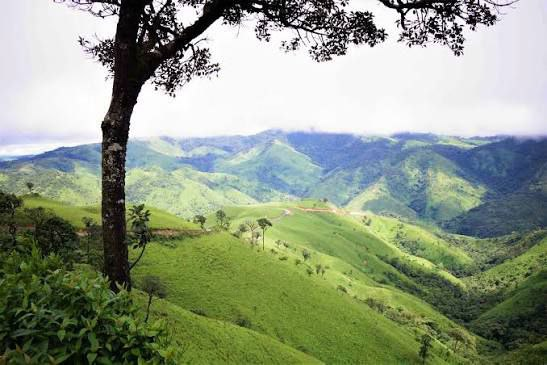
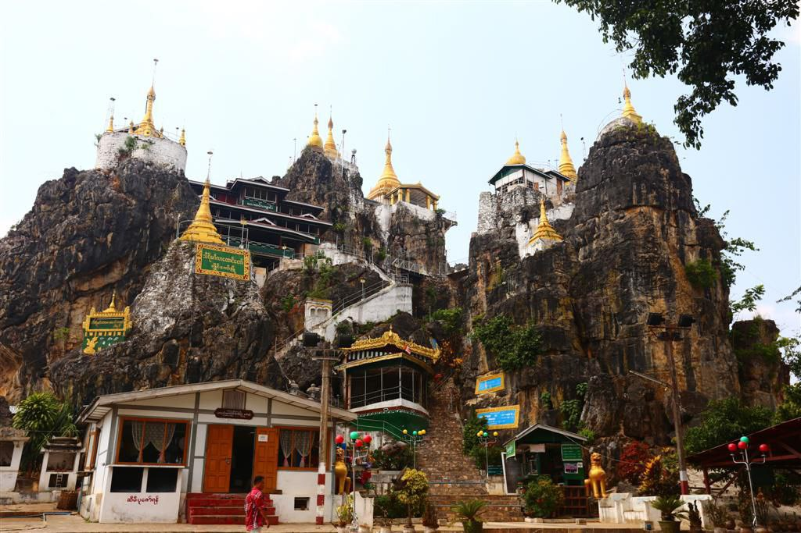
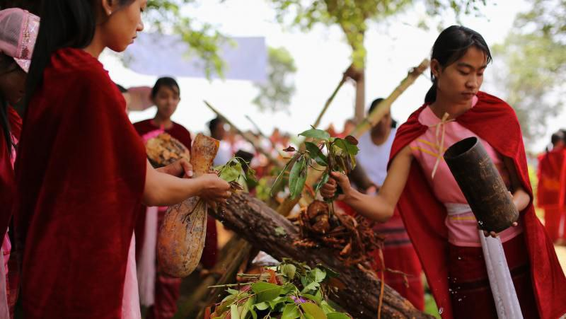
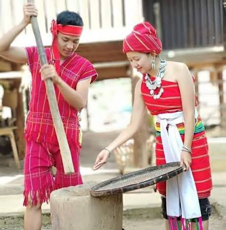
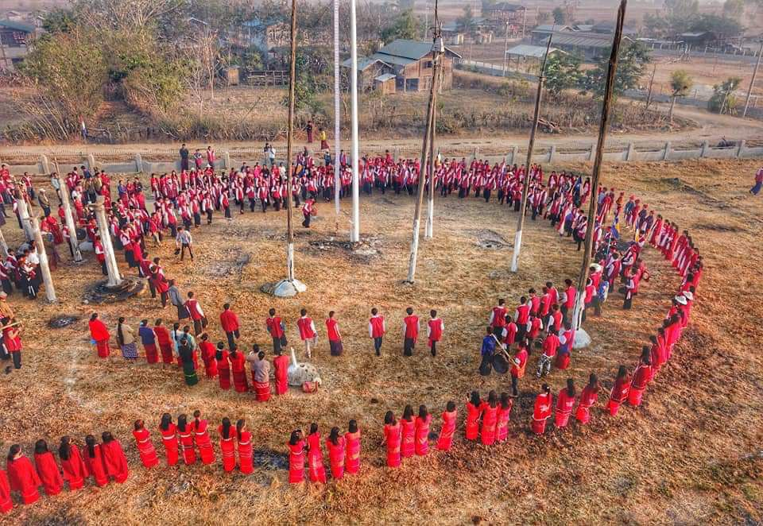

Profile
The Kayah people include subgroups such as Kayan (Padaung), Kayah (Karenni), Geko, Geba, Zayein, Bre, Manu-Manou, Yin Talai, and Yin Baw. Their population is approximately 171,000, with about 162,000 living in western Kayah and 9,000 in eastern Kayah. They speak Karenic languages, and many Kayah people also speak Burmese. Their recorded history in the region is limited, but the traditional rulers of the Karenni states, the Saophyas or Sawbwas, maintained significant independence from neighboring Burman and Thai powers until the late 19th century, when British colonial authorities began integrating them into the administration.

Location
The Kayah (or Karenni/Red Karen) people are thought to have migrated into their current homeland, Kayah State in eastern Myanmar, from Central Asia, possibly from Tibet or Mongolia, around the first millennium BCE. They are a sub-group of the larger Karen people, inhabiting the isolated mountainous border region with Thailand.

Taung Kwe Pagoda
The Taung Kwe Pagoda lies in the south of Loikaw, Kayah State, atop Thirri Mingala Hill, that has nine peaks on nine broken hills. It was called Mingala Hill, Phawmye in Kayah, Taunggwe in Myanmar, and Loi Pha Phat in Shan. It is 387 feet high. There are pagodas on the nine hillocks named Pyilone Chantha, Shwe Yattaung, Shweyin-aye, Kyauk Thamban, Aung-dawmu, Sutaungpyi, lower Kyaikhtiyo, upper Kyaikhtiyo and Shwe-Pyi-Aye.

Culture and Traditions
The music and dance of the Kayah people are integral to their cultural events, such as the Kay-Htoe-Boe festival, where they perform traditional dances and use instruments like the frog drum and bamboo guitar. Dances often feature group movements, such as the shield dance and stepping between moving bamboo poles, and are central to festivals that symbolize prosperity and unity.

Traditional Dress
The Kayah traditional dress is known for its bright, red colors and distinctive features, with women often wearing sleeveless black blouses, red cloaks, long white shawls, and a longyi (sarong-like garment) in red or black, while men wear white headdresses, shirts, and trousers. Kayah clothing is also notable for its intricately woven textiles, colorful turbans, and silver accessories like earrings and bracelets, which convey cultural identity and social status.

Festival
The main festival of the Kayah (Karenni) people is the Kay Htoe Boe Festival, also known as the Sacred Totem Pole Festival, celebrated annually in April. Other notable events include the Frog Drum Festival and traditional dances like the Tagundaing and house-warming ceremonies. These festivals involve selecting and erecting a sacred totem pole, offering prayers for prosperity and good harvest, and participating in ethnic dance and costume competitions.